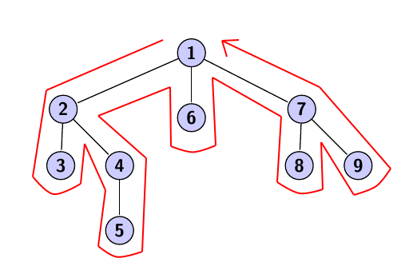
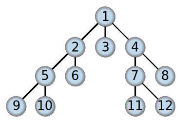
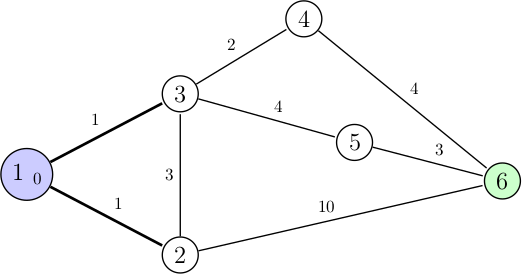

Ce projet a pour objectif d'optimiser les algorithmes de parcours en largeur et en profondeur, ainsi que l'algorithme de Dijkstra, pour les recherches complexes dans les bases de données et les réseaux informatiques. Ces algorithmes sont essentiels pour explorer et trouver des chemins optimaux dans des systèmes d'information complexes.
Parcours en largeur et en profondeur des graphes
Algorithme de Dijkstra pour trouver le chemin le plus court
Pour traiter et organiser des données complexes, les algorithmes de parcours en largeur et en profondeur sont privilégiés pour leur efficacité dans l'exploration de graphes. L'algorithme de Dijkstra est spécifiquement utilisé pour sa capacité à trouver le chemin le plus court, optimisant les parcours dans les bases de données et les réseaux.
Ces algorithmes sont appliqués pour résoudre des problématiques de recherche et de navigation dans des systèmes informatiques complexes, comme la recherche opérationnelle, l'optimisation globale, et les systèmes à intelligence artificielle.
Les enjeux autour de l'utilisation de ces algorithmes incluent la précision, la rapidité et l'évolutivité des systèmes de recherche. Ils permettent une meilleure gestion du code et des données, assurant une compréhension claire des résultats obtenus.
En optimisant les algorithmes pour des performances maximales, on réduit la consommation énergétique et on contribue à un impact environnemental moindre. Leur mise en œuvre efficiente peut également avoir un impact social positif en rendant l'information plus accessible et en améliorant l'expérience utilisateur.
Vous pouvez obtenir les algorithmes complets en allant sur mon GitHub :